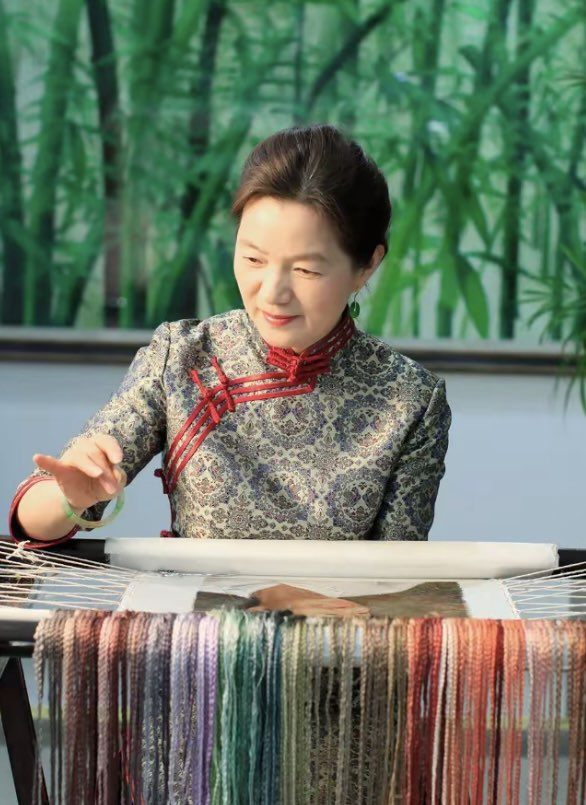
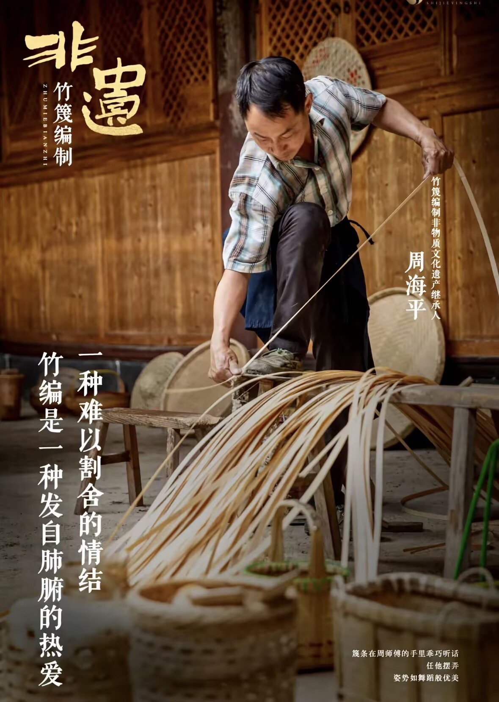
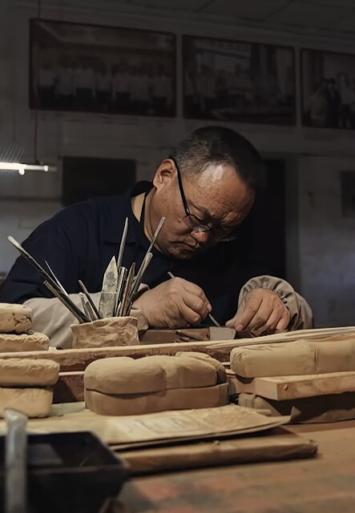

姚建萍出身苏州刺绣世家，自幼跟随家中长辈学习传统苏绣，年少便熟练掌握平针、盘金、打籽等几十种传统针法。成年后发现传统苏绣题材受限、受众日渐变少，决心打破固有创作框架，把国画、油画的光影构图融入刺绣创作，开创现代写实苏绣。
多年来，她的作品多次被选作国家外交礼品送往海外各国，登上国内外艺术大展。为留住苏绣技艺，她在苏州创办非遗传习基地，常年面向在校学生、社会爱好者开设公益课程，手把手带徒，累计培育数百名新生代绣娘，让千年苏绣不断薪火相传。

周海平是安徽宣城本土竹编手艺人，从少年拜师学艺起，深耕皖南竹篾编织三十余年，精通从竹子选材、蒸煮、劈篾、拉丝到纹样编织全套古法工序。随着塑料制品普及，老式竹篮、竹簸箕慢慢被淘汰，竹编手艺濒临失传。
他走遍宣城周边各个古村落，寻访老匠人、收集濒临消失的传统编织纹样，结合现代审美改良产品，开发竹制书签、茶具收纳、文创摆件等新品。同时走进本地中小学开设竹编兴趣课堂，利用课余时间免费授课，让年轻孩子近距离接触竹艺，守住皖南乡土非遗。

澄泥砚位列中国四大名砚，明清之后古法烧制工艺渐渐失传，配方、泥料炼制、窑火把控等关键技艺残缺不全。蔺涛立志复原古法澄泥砚，数十年间奔走汾河沿岸古窑遗址，查阅海量古籍文献，反复调试泥料配比、窑温，历经上千次失败试验，耗时二十余年完整复原失传古法。
如今他创办澄泥砚非遗工坊与研学基地，一边复刻历代经典古砚，一边研发便携文创小砚；常态化开设非遗体验研学活动，接待各地研学学子，用实际行动让沉寂百年的澄泥砚重回大众视野。
1.全国非遗资源普查工程：历时多年全国地毯式摸排，收录民间口头文学、传统手工、戏曲曲艺等超10万项非遗资源，建立国家级非遗档案库，留存大量濒临消失的乡土技艺资料；
2.非遗工坊扶持政策国家专项财政补贴落地县域乡村，扶持上千家乡村非遗手工作坊落地，帮助手艺人对接市场，解决传统手艺销路难题，带动乡村就业；
3.非遗数字化存档项目联合各大博物院、高校，以高清影像、录音、3D扫描形式，对高龄传承人独门手艺全流程录制存档，永久数字化保存，避免人亡艺绝。
广西壮锦传统纹样联动国潮服饰品牌，把民族织锦印花做成日常穿搭面料；江西南丰傩舞改编现代舞台剧，全国多地剧院巡回演出；景德镇迷你陶瓷摆件、苏绣书签、澄泥砚文创小砚陆续上线文创市场；各地非遗进景区、进校园、进商超，让尘封的老手艺融入当代年轻人日常生活，实现传统技艺市场化长效传承。